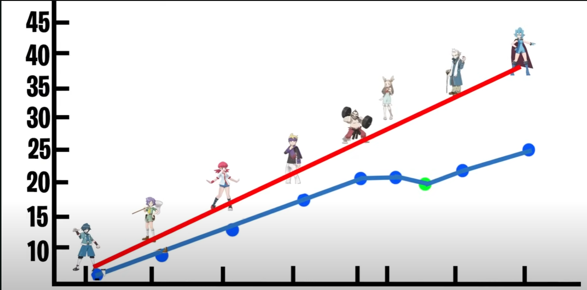
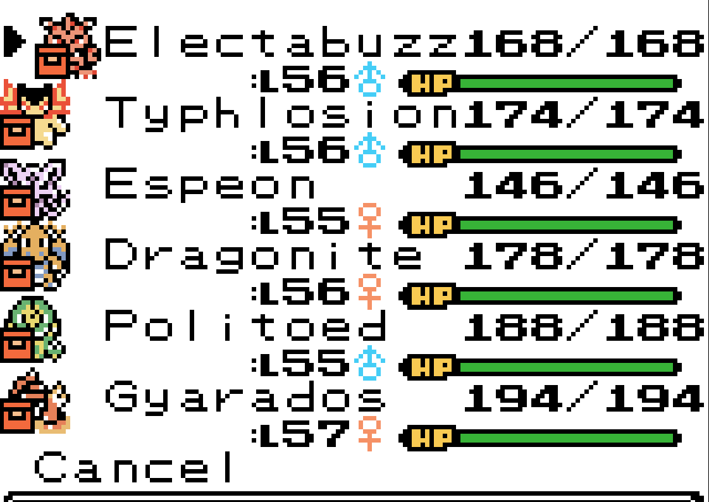

Pokemon Polished Crystal 3.1.0
Desenvolvedor(a): Rangi
Publicadora: É uma hackroom feita atraves do pokemon crystal
Gênero: RPG Turno/Aventura
Engine: Game Boy Color - 2° geração
Plataformas: Microsoft Windows, Mobile
Data de Lançamento: no ano de 2025
Introdução
“O enredo é o mesmo — você começa em New Bark Town, vence os ginásios de Johto e a Elite Four, depois segue para Kanto e luta contra o Red. No entanto, adicionei novos Pokémon, novos movimentos, novas mecânicas, novos mapas, novos eventos, novos treinadores, novos itens, novos bugs, e lutar contra o Red nem é o fim do jogo. Também aumentei moderadamente a dificuldade, embora isso provavelmente precise de ajustes.” — rangi (criador da hackrom)
O motivo de eu escolher jogar uma hackrom da versão Crystal não foi apenas pela possibilidade de capturar todos os Pokémon, mas também pelos diversos problemas que a versão original apresentava. Um deles era a falta de lógica na progressão dos líderes de ginásio, como o caso do Pryce: no Crystal original, você podia enfrentá-lo antes mesmo do Chuck e da Jasmine, o que criava uma queda de nível inesperada nos oponentes.
Na versão modificada (hackrom), essa progressão foi corrigida e bem estruturada. Um ótimo exemplo disso está na imagem que peguei do canal -SmithPlays Pokemon- (youtuber), mostrando a comparação entre a rota original e a nova.
Outro erro do Crystal original era a sensação de que Johto era apenas uma “DLC” de Kanto. Muitos Pokémon novos só estavam disponíveis após vencer a Elite Four, o que enfraquecia a identidade da região. Essa hackrom corrige isso muito bem. Outro detalhe que foi aprimorado, mas ainda vem do sucessor original, foi o antigo limite de espaço na mochila — agora muito mais funcional.
Mecânica
A parte mecânica me surpreendeu bastante, com várias melhorias excelentes para uma hackrom da 2ª geração. Alguns destaques:
- Adição do tipo Fada;
- TM's reutilizáveis e possibilidade de deletar HM's;
- Os HM's não precisam estar equipados — basta ter um Pokémon compatível no time e apertar “A” no local, agilizando a exploração;
- Interface reorganizada na lista de ataques dos Pokémon.
- Possibilidade de escolher um terceiro personagem, com a introdução da Lyra, que aparece no SoulSilver.
- Pós-game expandido, com opções como Battle Tower e rebatalhas com líderes, com mudanças nos times e níveis — por exemplo, o Bugsy não tem mais Metapod e Kakuna.
- Mais espaço para itens: só precisei acessar o PC ao chegar em Viridian.
- As Poké Balls feitas pelo Kurt são entregues na hora!
- Sprites com variações de cor inspiradas em Pokémon Colosseum. Ex: um Pidgey pode ter uma coloração diferente, mas com os mesmos status.
- Inclusão de novas formas de Pokémon e aumento do limite de 251 para 344 Pokémon, algo impensável na época do Game Boy.
Gráficos
Tenho um gosto especial pela arte em pixel da 2ª geração. A estética me encanta. Algumas melhorias que chamaram minha atenção:
- É possível decorar seu quarto. Abaixo, um exemplo de como o meu ficou com os troféus das duas vezes que enfrentei a Elite Four.
- Novos locais, alguns criados pelo autor e outros inspirados nas Ilhas Laranja. Apesar de algumas partes parecerem inacabadas(como exemplo a ilha de shamouti tem falta de dialogo com NPCs), a ideia é promissora.
- O mapa foi redesenhado, com novos lugares e detalhes interessantes como a linha de trem de Goldenrod até Saffron.
Trilha Sonora
A trilha sonora é boa, com pequenas melhorias em relação ao Crystal original, mas não chega a ser excepcional. Ainda assim, cumpre bem seu papel.
História
A história foi muito bem expandida. Além dos novos mapas:
- Adição de uma nova missão com a Equipe Rocket, agora com quatro aparições ao invés de três. Destaque para o evento na Yellow Forest, onde aparecem Jessie e James.
- Inclusão de líderes Rocket com sprites únicos, como o Archer, o que deixa as batalhas mais marcantes.
- Detalhes imersivos como jornais nos Centros Pokémon relatando eventos da cidade e dos líderes.
- A Lyra tem uma participação bem feita no pós-jogo, inclusive batalhando pelos líderes de Johto.
- A progressão foi linearizada após o 4º ginásio, forçando o jogador a seguir a ordem lógica de eventos, o que corrige a bagunça da versão original.
Otimização
Não encontrei bugs durante minha jogatina. Todos os elementos mencionados na parte de mecânica funcionaram perfeitamente, e o ritmo do jogo ficou ótimo. Nem senti a necessidade de "grindar" XP.
Veredito Final
Antes de começar o veredito final, só quero compartilhar o meu time para primeira Elite Four, o electabuzz era shiny que veio do ovo shiny entregue em goldenrod
Essa hackrom é, com certeza, uma das melhores experiências que já tive com a 2ª geração. Ela respeita a essência do Pokémon Crystal original, mas corrige quase todos os seus defeitos, expande a história, melhora as mecânicas, otimiza o sistema de batalha, dá vida aos mapas e ainda cria uma experiência de pós-jogo divertida e desafiadora.
A personalização, a introdução de personagens clássicos como Lyra, Jessie e James, os novos Pokémon e mapas inéditos transformam essa versão em algo especial para fãs nostálgicos e novos jogadores.
Nota: 96
Voltar para a página principal